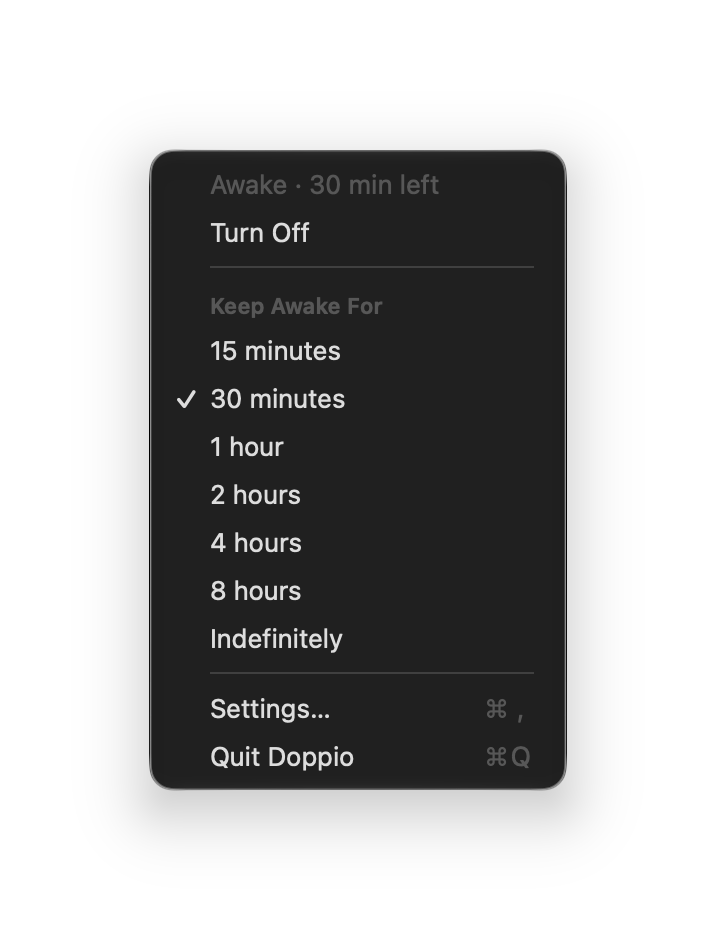

Doppio sits in your menu bar and keeps your Mac from falling asleep. Click the cup to turn it on. Click it again when you're done. Right-click if you'd rather set a timer.

First launch
Doppio isn't notarized by Apple, so macOS blocks it the first time you open it. Go to System Settings, then Privacy & Security, and click Open Anyway. You only need to do this once.
Good to know
Free and open source under the MIT licence. No account, no analytics, no network access. Runs on Apple Silicon and Intel.